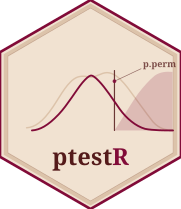

ptestR: Permutation-Based Significance Testing for Regression Models
Source:R/ptestR-package.R
ptestR-package.RdptestR wraps stats::glm(), lme4::lmer(), and binomial stats::glm()
with a permutation loop to produce nonparametric p-values. For each model,
a null distribution of the test statistic is built by randomly rearranging
the outcome variable (permNum times); p.perm is the proportion of
permuted statistics at least as extreme as the observed one.
This approach requires far fewer distributional assumptions than standard Wald or likelihood-ratio tests, making it well-suited to neuroimaging, EEG, and other biomedical datasets with repeated measures and small samples.
Main functions
| Function | Model class | Test statistic |
grouped_perm_glm() | Generalised linear model (glm) | t |
grouped_perm_glmm() | Linear mixed-effects model (lmer) | t |
grouped_perm_binoglm() | Binomial logistic regression (glm) | z |
All three share the same call signature and return a tidy tibble.
References
França LGS, et al. (2024). Neonatal brain dynamic functional connectivity in term and preterm infants and its association with early childhood neurodevelopment. Nature Communications, 15, 16. https://doi.org/10.1038/s41467-023-44050-z
Author
Maintainer: Lucas G. S. França lucas.franca@kcl.ac.uk (ORCID)
Authors:
Yan Ge yan.ge@kcl.ac.uk
Dafnis Batalle dafnis.batalle@kcl.ac.uk (ORCID)